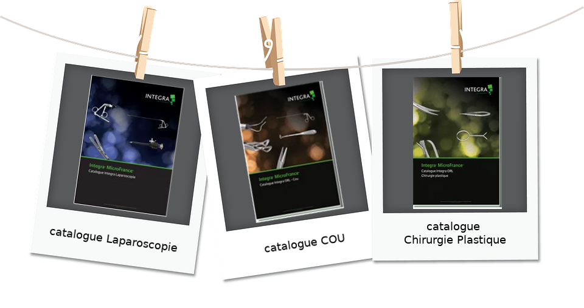
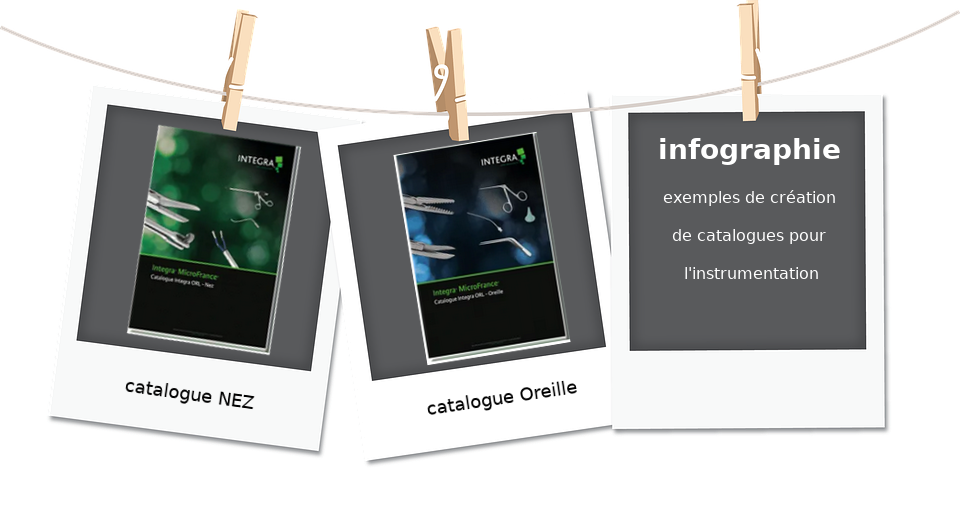
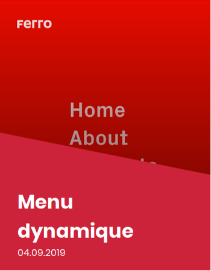

Introduction
Je suis Fabrice Chapier, en recherche active
j'ai 55 ans, et je suis actuellement en formation au sein de la "Fabrique Simplon" de Clermont-Ferrand pour devenir Développeur Web Junior.
Je suis très heureux de vous présenter les projets réalisés pour le Web au cours de cette formation, et ceux déjà réalisés en infographie et sur la gestion d'un service après-vente via un développement Access.
Vous trouverez également les compétences que j'ai acquises avant et pendant cette formation.
Enfin, vous pourrez me contacter à la rubrique contact.
Compétences
Le 16 octobre 2019, j'ai réussi le certificat de compétences
Opquast certified : "Maitrise de la qualité en projet Web".
Le score obtenu atteste d'une :
"Bonne connaissance des bonnes pratiques qualité Web et du vocabulaire associé".
"Capacités à comprendre et échanger avec les autres professionnels du Web."
Page d'authentification pour le certificat Opquast n° : 2JQCMF
Vous pouvez visualiser mon Curriculum Vitae  et le télécharger.
et le télécharger.
(CV PDF : 0,5Mo)
Si vous avez une question ou simplement besoin d'un renseignement, vous pouvez me contacter en cliquant ici: Contacts.
| Logiciels WEB : |
|
|
| HTML5 - CSS3 |
| PHP 7.2 - SQL 5.7.28 |
| Symfony 4.3.8 |
| Javascript |
| WordPress 5.3 |
| GIT (GitHub) |
| Linux Ubuntu 18.04.3 LTS |
|
| Logiciels Infographie : |
|
|
| Adobe Photoshop |
| Adobe InDesign |
| Adobe Illustrator |
|
| Logiciels bureautique : |
|
|
| Microsoft Suite office |
| Access |
| Excel |
| Word |
| Powerpoint |
| Langues : |
| Français |
langue maternelle |
| Anglais |
niveau B2, test gratuit
TOEIC Online Practice |
Infographie
Réalisation des catalogues MicroFrance® pour l'instrumentation ORL : Oreille, Nez, Cou, la chirurgie plastique et la chirurgie laparoscopique.


Ces catalogues peuvent être visualisés sur le site www.microfrance.fr.
Quelques chiffres :
- 5 catalogues en français et en anglais,
- Plus de 2500 produits traités,
- Application de la charte de la société,
- Prise de photos, retouches, enregistrements.
- Logiciels utilisés :
- InDesign : pour la mise en page,
- Photoshop : pour la retouche photo et l'enregistrement des images,
- Excel : pour le traitement des données du service marketing (texte en Français, en Anglais, gestion mise en page et commentamires des chefs de produits).
Vous pouvez visualiser un extrait du catalogue Laparoscopie en cliquant sur ce lien
(format PDF, 1,8 Mo).
Projets Web mobile
Création d'une landing page statique
avec une prise de rendez-vous
et utilisation de MailChimp.


Réaliser un jeu en Javascript : Chifoumi
Réaliser un Chatbot (1) avec présentation de la fabrique SIMPLON.
(1) Un chatbot, aussi appelé « agent conversationnel », est un programme informatique capable de simuler une conversation avec un ou plusieurs humains par échange vocal ou textuel.
Créer une première base de données SQL


Créer un menu dynamique en reproduisant un menu burger existant sur un site donné.
Créer le site internet WordPress de la promotion Simplon Développeur Web Mobile 2019.